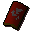

Shield right half
| Config name | dragonshield_b |
| Item id | 2368 |
| Value | 500000 gp |
| Weight | 6lb |
| Members | Yes |
| Tradeable | Yes |
| Stackable | No |
| Defined in | scripts/skill_smithing/configs/smithing/smithing.obj |
Shield right half
The right half of a dragon square shield.
Used to make
| Skill | Level | XP | Ingredients | Tool | How | Where | Makes |
|---|---|---|---|---|---|---|---|
| Smithing | 60 | 75.0 | Shield left half, Shield right half | use on object | anvil |  Dragon sq shieldmembers |
Sold at
| Shop | Shopkeeper | Stock |
|---|---|---|
| Legends Guild Shop of Useful Items. | 1 |
Referenced in scripts
scripts/_test/scripts/cheats/cheat_bank.rs2scripts/skill_smithing/scripts/smithing/dragon_sq.rs2scripts/skill_smithing/scripts/smithing/smithing.rs2